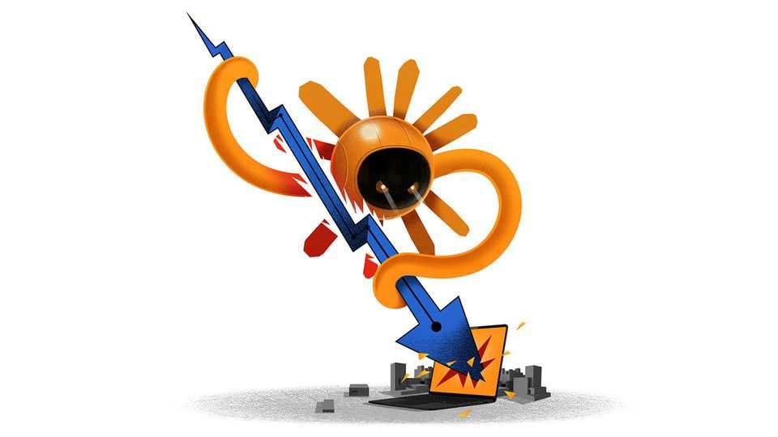

Business | Schumpeter

During the 2010s there were two reliable ways to make a fortune. The first involved selling enterprise software, the countless computer applications which now dominate office life. Businesses subscribe to these applications, as you might a magazine, as opposed to buying them only once, as you would a book. This “recurring” revenue explains the interest of private-equity funds, the second great gold mine of that era. During the past decade buy-out funds spent one in every three dollars on technology firms. As software ate the world, private equity drank champagne.
Central banks fractured this alliance when they raised interest rates in 2022. Now Claude Code threatens to shatter it. The judgment in public markets has been definitive—and the selling indiscriminate. Traders expect customers and startups armed with AI-coding tools like Anthropic’s Claude to beat up incumbent software firms. Marketing tools? Thwack! Legal tech? Crunch! Financial-data providers? Pow! The value of listed software firms has fallen by a fifth this year, and the chill is drifting through the few public windows investors have onto private markets, where assets change hands less frequently. Loans to software firms owned by private equity have tumbled, along with the value of funds that own those loans and the asset managers which run those funds.
When private-capital firms reported their earnings in recent days, analysts’ questions about their exposure to software forced bosses to go against their instincts and offer the lowest number they could. TPG admitted that 18% of the money from its buy-out funds was in the software industry. KKR and Blackstone tannoyed a lucky 7% to the market, calculated across their vast asset-management operations. Nothing to see here, said Carlyle: 6%. Brookfield went for “less than 1%” and Apollo, which has encouraged the rout by short-selling software loans, crowed that exposure to software in its private-equity funds “rounds to zero”.
There are good reasons for private-equity bosses to downplay the importance of a business that made them rich. The biggest have refashioned themselves, with varying levels of success, as safe, all-weather lenders to every part of the economy, rather than leveraged equity investors beholden to cyclical performance fees.
But the troubles will not be easily brushed aside. Applying the valuations of traded software firms to private-equity portfolios is a stomach-churning exercise. During the past five years the value of software firms in the S&P 500 index has fallen from 13 to eight times their revenue over the previous 12 months; across all listed American software firms the figure has gone from eight to three times. Compare that with the 25 largest private-equity buy-outs of traded software firms between 2019 and 2022, for which the median deal was struck at nine times the target firm’s revenue. This class has so far yielded the odd disaster (Pluralsight, which makes video-training courses for software engineers, messily restructured its debt in 2024) and the occasional success (the revenue of SailPoint, a cyber-security firm, doubled in the three years after it was taken private by Thoma Bravo). Mostly, though, the software firms remain stuck in ageing funds with investors worriedly guessing their true worth.
More important than the fate of the funds which own software firms is the debt that paid for their deals. Analysts reckon more than $500bn of borrowing tied to software firms is lurking in America’s credit markets. A popular comparison is with the energy industry a decade ago. During the shale boom, exploration businesses borrowed heavily before an oil-price crash in 2014 caused defaults to spike in the bond market. If things go wrong this time, who will be left holding the bag?
Unlike during the shale boom, and the hyperscalers’ current data-centre debt binge, software borrowers make up only a sliver of the bond market. Instead, buy-out deals were funded primarily by loans, which have floating rates and place more restrictions on the borrower. Perhaps 16% of the leveraged-loan market is tied to software deals, much of it housed in collateralised-loan obligations, an instrument similar to the one that broke financial markets in 2008. The largest bets on software debt, though, are found in business-development companies (BDCs), a type of corporate-lending fund often run by the biggest private-markets firms.
BDCs come in two types. The majority of assets sit in vehicles that are not publicly listed. Investors can redeem their shares in the fund each quarter. The largest is Blackstone’s BCRED which, were it a standalone bank, would be America’s 34th-biggest. Fully 26% of its loans are to software firms, mainly owned by private-equity funds. Other BDCs are traded on the stockmarket, which means investors can sell their shares whenever they want. The largest is run by Ares and has invested 24% of its assets in software loans. In recent weeks some investors have panicked. Listed BDCs trade at a growing discount to the value of their assets (net of debts). Last month investors in an unlisted BDC run by Blue Owl that has at least 29% of its portfolio in software debt pulled 15% of their money out. If funds start to prevent (or “gate”) redemptions, a downward spiral may follow.
Soul-searching financiers looking for a bullish case for software companies might find one by looking at their own industry. Traders mostly rely on a single piece of technology, the Bloomberg terminal, which has proved impervious to efforts by customers and competitors to create their own replacements. The work of investment bankers and private-equity bosses has been largely immune to changes in office software. They still spend much of their days labouring over Microsoft Excel, just as they did a generation ago. Even so, if the software crash persists, they may have to refresh their models. ■
Subscribers to The Economist can sign up to our Opinion newsletter, which brings together the best of our leaders, columns, guest essays and reader correspondence.